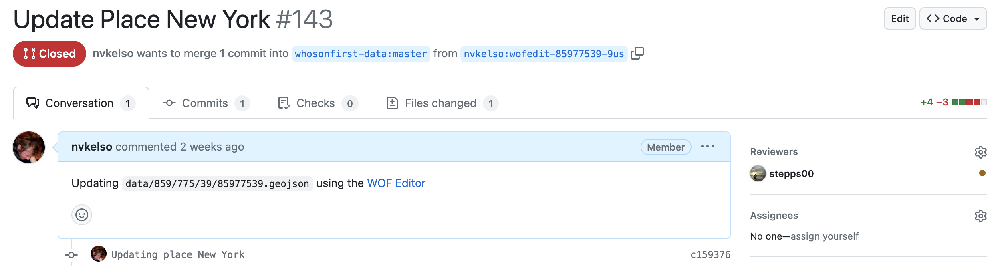
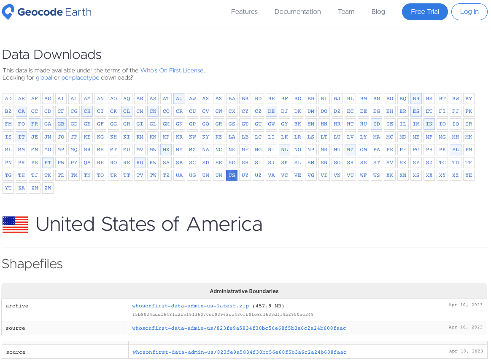

Making Who’s On First more accessible This is a blog post by nvkelso that was published on May 31, 2023 and tagged shapefile, download, whosonfirst, wof and data
One of our founding principles when the Who’s On First gazetteer launched in 2015 was data portability – that our data should work in any database. By publishing our gazetteer in GeoJSON, CSV, and SQLite formats we allowed you to decide how you wanted to import the data into your software stack of choice.
However, in conversation with the mapping community we’ve heard that data portability should be paired with accessibility by a wider audience who are more familiar with accessing geographic data in the shapefile format widely used by GIS practitioners and supported by almost all GIS software packages.
Accessibility is actually one of the core tenants of the International Open Data Charter which pairs accessibility with usability in the same principle. Over time, the Who’s On First properties schema has grown more complicated both in breadth and depth – including nested GeoJSON properties that don’t play nice with other formats. While this richness in properties holds space for managing multiple viewpoints about a place, the many hundreds of properties can be daunting for a first time user.
We’ve also heard that reading from and writing to the WOF gazetteer should be equally important. The Spelunker has long provided an easy way to preview place records on the web. Adding Shapefile downloads, along with the existing SQLite downloads, makes it easier to read the data in bulk. There is also growing community interest in providing quick edits and more extensive bulk imports to keep the data fresh. This post will detail ongoing efforts in the “write” direction.
Our goal with this new work is three fold:
- broaden the audience for the WOF gazetteer with a new Shapefile distribution format
- make it more approachable with a small set of core properties
- encourage more community engagement via simple edits, bulk imports, and knowledge sharing
Downloads
While we manage Who’s On First place records as individual text files in git repos hosted on Github, from the early days we’ve made “bundled” distributions available. Those distributions were more geared for software engineers than for a more general audience of map makers and cartographers.
SQLite databases contain the full firehose of Who’s On First data, including mixed geometry types and full set of nested GeoJSON properties. Unlike the raw GeoJSON files in the git repos, data in the SQLite databases are organized into several tables, including: spr, names, concordances, ancestors, and geojson. Geometries (default and alternate) are stored in the geojson table. The field layout of the spr table is explained in the Standard Place Response section below.
Shapefile downloads for the Who’s On First gazetteer are immediately available as per-country ZIP archives including admin (country, region, county, locality, neighbourhood & more), postalcode, and constituency placetypes.
While the shapefile format is more familiar for GIS technicians using desktop applications like QGIS or ArcGIS Pro, it has several significant limitations which means the downloads will lack the full range of Who’s On First features, properties, names, and geometries for a given place. They only include “active” features with a small set of essential properties.
If you’re new to Who’s On First the new shapefile option will provide an easy way to get up and going, and we hope make you hungry for the full range of data in the SQLite databases.
Since shapefiles don’t support mixed geometry types, there’s 2 shapefiles for every WOF placetype, like “locality-points” and “locality-polygons”.
For example:
- whosonfirst-data-admin-us-locality-polygon.shp
- Whosonfirst-data-admin-us-locality-point.shp
Since “shapefiles” are actually a collection of individual files (with extensions like: shp, shx, dbf, prj, and cpg), we group them into a single compressed ZIP archive for downloading and name the ZIP using same “latest” convention used for the SQLite downloads. If you’re using QGIS you can add the ZIP directly to your project without uncompressing it.
For example:
To limit the file size of shapefile downloads (which have a 2 GB per file component limit), exported features are a limited subset of Who’s On First data, which:
- only includes one row per id
- excludes alt geometries
- excludes id=1 (planet earth)
- excludes non-current records
- excludes unnamed records
- excludes null island records (with point geometries at 0,0)
Shapefiles also have a 10-character limitation on DBF field name length, which often truncates longer WOF property names into ambiguous field (column) names. We provide a mapping of shorter shapefile field names with the full WOF property names below.
Other formats? We may contemplate adding additional downloads in GeoPackage, GeoParquet, or other formats for the Who’s On First gazetteer, if there is interest. Please reach out!
Data Schema
Standard Place Response (SPR) fields
The Who’s On First “standard place response” (or SPR) provides just the essential properties with simple field names that sometimes coalesce values from multiple source properties.
Distributions like SQLite include SPR properties by default while also making the full set of original and nested GeoJSON properties, alternate geometries, and all name translations available.
With Shapefile we export most of the core SPR properties, and a few other goodies. Because of Shapefile’s 10-character limitation on DBF field name length (which would truncate some column names in an ambiguous way) we rename them explicitly, as noted below in the “field” column, with the “field_full” indicating the full SPR field name in the other formats, or full WOF property name.
| field | field_full | type | description |
|---|---|---|---|
| id | Id | integer | The unique ID of the place |
| parent_id | ParentId | integer | The unique parent ID of the place. Negative values indicate “complicated”. |
| name | Name | string | The default name of the place (mostly English, mostly ASCII-7) |
| placetype | Placetype | string | The Who’s On First placetype of the place |
| country | Country | string | The two-letter country code of the place |
| repo | Repo | string | The (Git) repository name where the source record for the place is stored. |
| lat | Latitude | float | The latitude for the principal centroid (typically “label”) of the place |
| lon | Longitude | float | The longitude for the principal centroid (typically “label”) of the place |
| min_lat | MinLatitude | float | The minimum latitude of the bounding box of the place |
| min_lon | MinLongitude | float | The minimum longitude of the bounding box of the place |
| max_lat | MaxLatitude | float | The maximum latitude of the bounding box of the place |
| max_lon | MaxLongitude | float | The maximum longitude of the bounding box of the place |
| modified | LastModified | integer | The Unix timestamp indicating when the place was last modified |
NOTE: In the Shapefile format, last “modified” is a date instead of the original Unix timestamp in integer seconds. In GIS software like QGIS this field will display in your local date-time system settings, like 2019-08-24.)
Basic properties for New York city (view on Spelunker):
id: 85977539
parent_id: -4
name: New York
placetype: locality
country: US
repo: whosonfirst-data-admin-us
lat: 40.682949999999998
lon: -73.970799999999997
min_lat: 40.496133999999998
min_lon: -74.255590999999995
max_lat: 40.915533000000003
max_lon: -73.700008999999994
modified: 2023-04-10
_NOTE: The Spelunker sometimes shows outdated records, use Github.com for source of truth.__
Other SPR fields
Formats besides Shapefile will include the other core SPR fields. They are excluded from Shapefiles because of the format’s 2GB file size limit, and because the export filter can imply their value.
| field_full | type | description |
|---|---|---|
| BelongsTo | integer | The list of Who’s On First IDs that are ancestors of the place |
| IsCurrent | boolean | The Who’s On First “existential” flag denoting whether the place is “current” or not |
| IsCeased | boolean | The Who’s On First “existential” flag denoting whether the place is “ceased” or not |
| IsDeprecated | boolean | The Who’s On First “existential” flag denoting whether the place is superseded or not |
| IsSuperseded | boolean | The Who’s On First “existential” flag denoting whether the place has been superseded |
| IsSuperseding | boolean | The Who’s On First “existential” flag denoting whether the place supersedes other records |
| Inception | string | The EDTF inception date of the place |
| Cessation | string | The EDTF cessation date of the place |
| SupersededBy | integer | The list of Who’s On First IDs that supersede the place |
| Supersedes | integer | The list of Who’s On First IDs that are superseded by the place |
| Path | string | The relative path for the Who’s On First record associated with the place |
| URI | string | The fully-qualified URI (URL) for the Who’s On First record associated with the place |
But Who’s On First is more than just basic properties, it’s also about names, holding hands with other data sources, contextualizing a place’s hierarchy, and a few other goodies we’ve found useful in our regular work with the gazetteer.
Names
To provide a more ergonomic Shapefile experience, we’ve pre-joined the SPR to the names table to include 25 more localized names, when available, for:
Arabic, Bengali, Chinese (simplified and/or traditional), Dutch, English, Farsi, French, German, Greek, Hebrew, Hindi, Hungarian, Indonesian, Italian, Japanese, Korean, Polish, Portuguese, Russian, Spanish, Swedish, Turkish, Ukrainian, Urdu, and Vietnamese
Who’s On First uses the RFC 5646/ BCP-47 language indications for names to specify a 3-character code for the following preferred locales as name_{locale} properties (so name_eng for English).
The list of supported Shapefile languages is adapted from Natural Earth and Tilezen’s list of core languages. Arabic, Chinese, English, French, Russian and Spanish are used by the United Nations for meetings and official documents. The other languages listed are either proposed as an official language of the United Nations (Bengali, Hindi, Portuguese, and Turkish) or frequently used in OpenStreetMap, Who’s On First, or Wikipedia.
Several hundred other languages are supported in the SQLite distributions in the “names” table.
Languages and their name fields
| field | 3-char | 2-char | language | native script |
|---|---|---|---|---|
| name_ara | ara | ar | Arabic | العربية |
| name_ben | ben | bn | Bengali | বাংলা |
| name_deu | deu | de | German | Deutsch |
| name_eng | eng | en | English | English |
| name_ell | ell | el | Greek | ελληνικά |
| name_fas | fas | fa | Farsi | فارسی |
| name_fra | fra | fr | French | français |
| name_heb | heb | he | Hebrew | עִבְרִית |
| name_hin | hin | hi | Hindi | हिन्दी |
| name_hun | hun | hu | Hungarian | magyar |
| name_ind | ind | id | Indonesian | Bahasa Indonesia |
| name_ita | ita | it | Italian | italiano |
| name_jpn | jpn | ja | Japanese | 日本語 |
| name_kor | kor | ko | Korean | 한국어 |
| name_nld | nld | nl | Dutch | Nederlands |
| name_pol | pol | pl | Polish | Polski |
| name_por | por | pt | Portuguese | Português |
| name_rus | rus | ru | Russian | Русский |
| name_spa | spa | es | Spanish | español |
| name_swe | swe | sv | Swedish | Svenska |
| name_tur | tur | tr | Turkish | Türkçe |
| name_ukr | ukr | uk | Ukrainian | українська |
| name_urd | urd | ur | Urdu | اردو |
| name_vie | vie | vi | Vietnamese | Tiếng Việt |
| name_zho | zho | zh | Chinese | 中文 |
NOTE: Chinese names may include a mix of simplified and/or traditional Chinese characters. The SQLite file tries to imply Simplified or Traditional characters with additional country tags.
Back to our New York city example:
name_ara: نيويورك
name_ben: নিউ ইয়র্ক সিটি
name_deu: New York City
name_eng: New York
name_ell: Νέα Υόρκη
name_fas: نیویورک
name_fra: New York
name_heb: ניו יורק
name_hin: न्यूयॉर्क नगर
name_hun: New York
name_ind: Kota New York
name_ita: New York
name_jpn: ニューヨーク
name_kor: 뉴욕
name_nld: New York
name_pol: Nowy Jork
name_por: Nova Iorque
name_rus: Нью-Йорк
name_spa: Nueva York
name_swe: New York
name_tur: New York
name_ukr: Нью-Йорк
name_urd: نیویارک شہر
name_vie: Thành phố New York
name_zho: 纽约
Concordances
To provide a more ergonomic Shapefile experience, we’ve pre-joined the SPR to the “concordances” table in the SQLite database and shorted the full WOF property names in the original GeoJSON:
| field | field_full | type | description |
|---|---|---|---|
| gn_id | gn:id | integer | GeoNames unique identifier |
| wd_id | wd:id | string | Wikidata unique identifier |
| usgeo_id | uscensus:geoid | string | US Census unique identifier |
| hasc_id | hasc:id | string | Statoids Hierarchical Set of Subdivision Codes |
Back to our New York city example:
gn_id: 5128581
wd_id: Q60
usgeo_id: 3651000
hasc_id: NULL
Hierarchy
To provide a more ergonomic Shapefile experience, we’ve pre-joined the SPR to the “ancestors” table in the SQLite database, keyed off ancestor_placetype:
| field | field_full | type | description |
|---|---|---|---|
| country_id | country | integer | The unique ID of the place’s country ancestor |
| region_id | region | integer | The unique ID of the place’s region ancestor |
| county_id | county | integer | The unique ID of the place’s county ancestor |
NOTE: Some country_id properties will be empty in the case of dependencies.
Back to our New York city example:
country_id: 85633793
region_id: 85688543
county_id: 102082361
Other goodies
To provide a more ergonomic Shapefile experience, we’ve extracted several GeoJSON properties from the SPR table in the SQLite database and shorted the full WOF property names in the original GeoJSON:
| field | field_full | type | description |
|---|---|---|---|
| population | wof:population | integer | An integer value to represent the most current, known population of a place |
| is_funky | mz:is_funky | integer | An integer value used when the record is suspect, bad, or inappropriate but additional confirmation is needed before the feature is deprecated. Records with a 1 value are recommended to be hidden from map display and search unless explicitly asked for by name. |
| min_zoom | mz:min_zoom | float | Float values (though in practice mosts are integer values) that match to web map zoom schema. Common range is 0.0 to 18.0, though they can be greater. |
| max_zoom | mz:max_zoom | float | Float values (though in practice mosts are integer values) that match to web map zoom schema. Common range is 0.0 to 18.0, though they can be greater. |
| min_label | lbl:min_zoom | float | When the feature’s label should first appear. Float values (though in practice mosts are integer values) that match to web map zoom schema. Common range is 0.0 to 18.0, though they can be greater. |
| max_label | lbl:max_zoom | float | When the feature’s label should be removed (or switched to a different representation like exterior ring labels). Float values (though in practice mosts are integer values) that match to web map zoom schema. Common range is 0.0 to 18.0, though they can be greater. |
| geom_src | src:geom | string | The data source of a record’s geometry. Valid property values are listed in the whosonfirst-sources repository |
Back to our New York city example:
population: 8405837
is_funky: NULL
min_zoom: 1.7
max_zoom: NULL
min_label: 5
max_label: 12
geom_src: whosonfirst
Simple data edits
Sadly our earlier Boundary Issues web app for data edits in Who’s On First went offline when Mapzen shut down. In the intervening years we’ve developed Write Field, an web app for making quick data edits to a smaller set of WOF record properties commonly used in map display and search. You’ll need a Github.com account to login and propose edits, which are then reviewed using the Github pull request process.
Example workflow:
- Load the New York city record into Write Field by determining it’s
wof:id(85977539) and locating it’s source GeoJSON record from Github’s raw file view - Once property and value editing is complete, Write Field will generates a pull request (or “PR”“) for human review, using the standard WOF workflow in Github. This includes the web app running Exportify for you to format the record as WOF GeoJSON (with property key, value pairs on new lines, geometry on the last line, and an updated time stamp to ease PR diff generation and human review).
- View example pull request: us/#143
- 
- To make this easier, we’ve enhanced the Spelunker to include a new “Edit” link in the right sidebar when browsing a place
Although this process is working for us, your feedback and engineering contributions will make it easier for more people to contribute over time. Thank you :)
Bulk data imports
The great thing about the open data movement is more and better data about the places is released every year. We are grateful for efforts like INSPIRE in Europe and many other efforts elsewhere. Sometimes that means updating existing Who’s On First records and their properties. Often it means editing more than one record at a time, or even importing thousands of new records into our gazetteer which we have done for many countries as better open data comes online. The benefit of incorporating new data into Who’s On First is it’s immediately available in all downstream applications that rely on Who’s On First.
To do bulk edits we often extract, transform, and load the the new open data in the QGIS desktop application, and then use a script to loop thru the final aggregate product to update existing individual WOF records in the git repos, or to create new records (when appropriate) with a minimum set of properties. Exportifying the record in single line per property formatted GeoJSON which allows easy visual diff’ing of changes, setting the lastmodified date, and setting the hierarchy via reverse geocoding are extra steps in this bulk data import workflow. But the final result is a Github PR that can be easily reviewed and linked with any accompanying property or source definitions.
This work flow continues to evolve, and has been documented in several blog posts, including:
- Guide for editing neighbourhoods with San Francisco as test city, including a step-by-step workflow
- Several neighbourhood shapes improvement projects, including initial blog post and followup to shrink overly big Zetashapes neighbourhood polygons in the United States, and global polygon rebuilds for major cities.
- WOF Cookbook, including Park City (Utah) neighbourhood import Python script, and separate script for importing new localadmin features.
Example Github issues and pull requests:
- Estonia: Update county and localadmin records in ee/#11
- France: Updated to localadmin and locality records in #1343
- Germany: Updates to localadmin & locality records de/#1
- Netherlands: Updates to neighbourhood records, including in Amsterdam #625 and Rotterdam/The Hague #633
- Norway: Update region and localadmin records in no/#8
- Singapore: Update country, region, county, locality, borough, macrohood, and neighbourhood records in [sg/#9]()
- Switzerland: Major rebuild of region, county, localadmin, locality, and neighbourhood records – including evaluating and setting properties like
wof:coterminious,mz:hiearchy_label, andmz:is_funky, with new Wikidata names, from SwissTopo. #1334 and ch/#4
Often bulk imports take some time to discuss, coordinate, implement, and review. To simplify the workflow and make it easier to review, larger imports for a new source in a country are commonly split into smaller Pull Requests by placetype or group of placetypes (like country, region, and county features in one PR, and localadmin and/or locality features in another PR).
We’re hopeful that the complexity of reverse geocoding to determine a place’s ancestor hierarchy can be simplified by new technologies like PMTiles, as Aaron has been exploring at the SFO Museum.
Get the data
Downloads are kindly processed and hosted by Geocode Earth, including SQLite and now Shapefiles by country. Particular thanks to Peter Johnson there for getting the new format setup.
- Load Data Downloads page
- Click on the desired 2-character country code button in the top matrix (eg
USfor United States) - Confirm your country’s name and flag below the top matrix
- Scroll down to the Shapefiles section,
Administrative" Boundariessection, and click the name of the ZIP file to download it (eg whosonfirst-data-admin-us-latest.zip)
NOTE: There’s also an inventory.json file available for programmatic use.

Feedback
We hope you enjoy open data from the Who’s On First gazetteer!
If you have feedback please submit a new issue or discussion topic via Github.
If you prefer email:
- Subscribe to WOF Announcements for “big news”, via Mailchimp. Frequency is a few times per year. Subscribe now and you’ll be first to know about our big India locality data drop!
- Join our new WOF Gazetteer discussion group on Google to ask questions and share updates on your country’s latest changes to it’s internal administrative subdivisions. If you’re a geography geek, this one’s for you.
Or on social media:
- Follow us on Mastadon at mapstodon/@whosonfirst
Photo Credit: Umbra Desktop Utensils in Case, Cooper Hewitt Design Museum